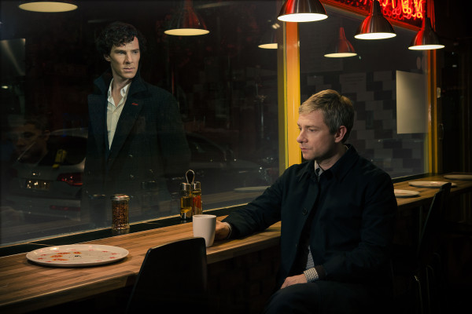

| |
این
پست ترجمه ی یکی از پست های وبلاگ دکتر جان واتسون است ، وبلاگی که توسط
سازندگان سریال همزمان با پخش آن به روز می شود و با وقایع سریال Sherlock منطبق است .
شرلوک چند تا
پرونده ی جنون آمیز طی چند سال اخیر داشته و من هیچ وقت نمی گم بهشون کاملا
عادت کردم ولی هیچی ، و واقعا هیچی ، نمی تونست من رو برای چیزی که در
خانه ی شماره 29 ، کوچه ی رایدر در بروکلی پیدا کردیم ، آماده کنه ...
ادامه مطلب
دوشنبه 16 دی 1392ساعت : 19:09|
نویسنده : Sherlockpedia |
|
[http://www.aparat.com/v/k47dP]
*هشدار اسپویلر*
ادامه مطلب
جمعه 13 دی 1392ساعت : 08:02|
نویسنده : مهرناز |
|
این
پست ترجمه ی یکی از پست های وبلاگ دکتر جان واتسون است ، وبلاگی که توسط
سازندگان سریال همزمان با پخش آن به روز می شود و با وقایع سریال Sherlock منطبق است .
بدیهیه که ماجرای
آیزاک پرسانو تو صدر خبر ها قرار گرفت . او داخل یک اتاق هتل در حالی که
دورتادورش رو قوطی های کبریت احاطه کرده بودن ، پیدا شد . و نمی تونست حرف
بزنه . شرلوک اون رو کاملا " روانی و عقل از دست داده " توصیف کرد ولی من
تشخیص دادم که به طور فنی ، داشت از یک حالت شدید اختلال استرس بعد از
حادثه رنج می برد . و البته بعدش شرلوک باید اشتباه من رو ثابت می کرد ...
ادامه مطلب
چهارشنبه 11 دی 1392ساعت : 11:25|
نویسنده : Sherlockpedia |
|
این
پست ترجمه ی یکی از پست های وبلاگ دکتر جان واتسون است ، وبلاگی که توسط
سازندگان سریال همزمان با پخش آن به روز می شود و با وقایع سریال Sherlock منطبق است .
وقتی صاحب یک
رستوران چینی واقع در نایتسبریج ، مُرده با صورت افتاده در یک بشقاب نودل
پیدا شد ، لستراد سراغ شرلوک اومد تا ببیندش . اون مرد ، تری وانگ ، خفه
شده و مرده بود ، و در ابتدا ، به نظر یک اتفاق می اومد ولی کبودی روی صورت
وانگ ، نشان می داد که به یک منظوری در بعدازظهر روزی که می میرد ، مورد
تهاجم واقع شده ...
ادامه مطلب
دوشنبه 9 دی 1392ساعت : 15:06|
نویسنده : Sherlockpedia |
|
این
پست ترجمه ی یکی از پست های وبلاگ دکتر جان واتسون است ، وبلاگی که توسط
سازندگان سریال همزمان با پخش آن به روز می شود و با وقایع سریال Sherlock منطبق است .
وقتی " جیلان 1 حسن " فوت
کرد ، به نظر فقط یک " بزن در رو " ی ساده می اومد . داشته خرید میرفته و
داشته خیابون بیرون خونش رو رد میشده که یه اتوبوس بهش زد . خوش آیند نبود
ولی چیزی بیشتر از معمولی هم نبود . تا وقتی که برادرش پیشمون اومد و ازمون
خواست تا چند توییت آخرش رو بخونیم ...
ادامه مطلب
دوشنبه 9 دی 1392ساعت : 13:05|
نویسنده : Sherlockpedia |
|
3 دی 1392
امروز از تولد وبلاگ 2 سال میگذره و داریم کنار هم دو سالگی وبلاگ و جشن میگیریم.
تو این دو سال دوستانه زیادی پیدا کردیم و یا فراموش کردیم،ولی وبلاگ هیچ کسی وفراموش نکرده و هنوز تمام چیزهایی که نوشتیم و از خودمون یادگار گذاشتیم مثل یک کتاب ضخیم در خودش جای داده.
دو سال پیش وقتی گوگل و سیرچ کردم با اسم شرلوک هلمز هیچ وبلاگ یا سایت فارسی زبانی و نتونستم پیدا کنم (وبلاگ هایی که پیدا شدند خیلی وقت بود که دست نخورده باقی مونده بودند) و این دلیلی شد تا بخوام وبلاگی با نام این شخصیت ایجاد کنم.
شروع کردم و دنبال چیز هایی گشتم که برای وبلاگ نویسی لازم داشتم. اولین چیزی که به ذهنم اومد خالق شخصیت شرلوک هلمز بود دوست داشتم در مورد این نویسنده مطلبی بزارم و این کار و انجام دادم. و این بهونه ای شد برای اولین پست وبلاگ.
شنیدید که میگن: هر انچه از دل برآید لاجرم بر دل نشیند.
قضیه ی شروع وبلاگ هم همین بود و خوشبختانه تعداد بازدید از 4 بازدید در روز بعد از دو سال تبدیل به 2000 بازدید در روز شد.
اولین کسی که ازش خواستم تا برام بیوگرافی تهیه کنه زهره بود که دوست خوبی برام بود ولی متاسفانه خیلی زود همکاریم بهم خورد. 
و بعد سارا کسی که دو سال تمام کنار وبلاگ بود و همیشه حامی خوبی براش بود و البته هست( دوستی با قلبی مهربان) .
دومین شخص شر20 بود که طرفدار 2 اتیشه ی بارسلونا بود.
و ati دوست عزیزم .
emm که به خاطر مشغله ی زیاد دیگه عضو نویسندگان نیست ولی هنوز نظراتی رو میشه خوند که توی پست های اون نوشته میشه.
دکتر جان واتسون که سال پیش بیشتر با ما همکاری داشت و دوست عزیزی برای من بود.
داستان های سر مسعود که هوای جدیدی به وبلاگ آورد.
کیم کولن عزیز که با هنر های خودش و کامیک های با نمک روحیه ی وبلاگ و زنده تر کرد.
دارک مون جان که ما با هم دوستی خاصی داریم و مدیر وبلاگ داستان ها ی شرلوک هلمز هست.
مهرناز عزیز که در خواست من و پذیرفت و میشه گفت یک ستون محکم برای وبلاگ هست و هیچ وقت نمیشه وبلاگ و بدون اسم اون تصور کرد.
و البته شرلوک پدیا که مدیر وبلاگ شرلوک پدیا هست ،کسی که با حضورش توی وبلاگ سطح مطالب و بالاتر برد .
محمد بزرگپور که با مطالب مخا خودش احساس نزدیکی بیشتری بین ما و شرلوک به وجود آورد و تشکر فراوانی از نوشتن این مطالب ازشون داریم.
و اما کیمیا که زبان از سخن کوتاه هست در این مورد و یکی از دوستانیست که با دلگرمی و آرامشی که برای شخص من به وجود آورد باعث ادامه ی وبلاگ شد .
و عضو جدید ما که مایکراف هلمز هست و کوچکترین عضو وبلاگ هست .
شخصیت شرلوک باعث شد تا خانواده ی بزرگی ایجاد بشه که همگی از فرزند خردسالمون محافظت میکنیم، امیدوارم این 2 سال تبدیل به 20 سال بشه و بتونیم کنار هم باقی بمونیم.
دوستان عزیز از همگی تشکر میکنم مخصوصا از Asi که در این دو سال همیشه کنار ما بود و هست.
بعد از دوسال میشه گفت بهترین هدیه وبلاگ برای طرفدارا پخش فصل سوم هست و البته قسمت مینی که به زودی برای دانلود قرار خواهیم داد .
متن از مدیر شرلوک هلمز
سه شنبه 3 دی 1392ساعت : 09:00|
نویسنده : کیمیا |
|
با نزدیک شدن به
روز کریسمس ، اطلاعات تازه ای از Many Happy Returns منتشر شده است . این
مینی اپیزود هفت دقیقه ای عنوانش " چندین بازگشت فرخنده " هست . خلاصه ی
اپیزود و اطلاعات پخش در ادامه ی مطلب ...
ادامه مطلب
یکشنبه 1 دی 1392ساعت : 16:03|
نویسنده : Sherlockpedia |
|
پس از مدت ها انتظار بالاخره تاریخ پخش شرلوک فصل سوم در بریتانیا معلوم شد ! ساعت یک بعداز ظهر به وقت گرینویچ در شنبه ، پانزدهم دسامبر امسال ( بیست و چهارم آذر ماه 1392) ، اولین قسمت فصل سوم Sherlock در تئاتر ملی فیلم لندن به نمایش گذاشته خواهد شد . این در حالی است که هنوز تاریخ پخش این سریال به طوریکه در تلویزیون پخش شود و پس از مدتی در اینترنت قابل دانلود باشد هنوز مشخص نیست . فروش بلیت ها آغاز شده است و اولین عکس رسمی " نعش کش خالی " (The Empty Hearse) منتشر شده و خلاصه ای از اولین اپیزود هم شرح داده شده است : " دو سال پس از اتفاقات ویرانگر " آبشار رایخن باخ " ، به نظر می رسد جان به زندگی جدیدش عادت کرده است . علاقه ها و تجارب تازه و یک داستان عشقی . اما با وجود لندنی که در خطر حملات تروریستی ویرانگری است ، شرلوک قصد دارد خود را به جان نشان دهد ، با زنده ظاهرشدنش همراه با همه ی اتفاقات تماشایی که برای او طبیعی است . اگر شرلوک فکر می کند همه چیز همانطور خواهد شد که قبل از رفتنش بوده است ، قرار است بسیار شگفت زده شود ... " این اکران ، شبیه به اکران " رسوایی در بلگریویا " در تئاتر ملی لندن در 7 دسامبر 2011 ، تقریبا یک ماه قبل از نمایش آن در تلویزیون در اول ژانویه 2012 است . بلیت های آن موقع تنها چند ساعت بعد از امکان فروش آن ، فروخته شدند ... باید دید که این بار چطور خواهد بود ...
منبع : سایت Sherlockology
سه شنبه 14 آبان 1392ساعت : 20:09|
نویسنده : Sherlockpedia |
|
لگو های ، سری اسباب بازی هایی هستند که از قطعات کوچک عموما پلاستیکی تشکیل شده اند و باید آن ها را سر هم کرد و برای سرگرمی اشکال و موارد مختلفی ساخت . بی شک با آن ها آشنا هستید ... از زمانی که قهرمانان دنیای کودکان ، شخصیت های کارتونی یا شخصیت های موجود در یک فیلم یا سریال شده اند ، لگو هایی هم برای هر یک از این آثار سینمایی ، کارتونی و یا تلویزیونی ، جهت سرگرمی ساخته شده است که بی شک در دنیای امروزی بسیار محبوبند .
سایت Lego Cuusoo جایی برای اعضای آن که عموما مردمی عادی هستند ، می باشد تا ایده هایی برای ساخته شدن لگو های مختلف ارائه بدهند و هر ایده ای که 10000 نفر آن را حمایت کنند (یا به اصطلاح Support) برای ساخته شدن به عنوان یک محصول رسمی لگو بررسی می شود و اگر مورد تایید قرار گرفت و تولید شد ، یک درصد فروش اینترنتی آن به صاحب ایده داده می شود .
و حال نوبت به سریال Sherlock رسیده است . این سریال که طرفداران زیادی میان نوجوانان دارد ، از طرف Flailx ، سوژه ی تازه ای برای لگو شدن طراحی شده و تا به حال حدود 5300 نفر آن را حمایت کرده اند . اگر به روزی امید دارید که این جورکردنی ها برایتان قابل دسترسی باشند ، با کلیک بر روی تصویر زیر به صفحه ی ایده ی Sherlock رفته و بر روی دکمه ی سبزرنگ Support کلیک کنید ولی توجه داشته باشید که پیش از آن باید عضو سایت شوید .
برای اطلاعات بیشتر درباره ی این محصول به ادامه ی مطلب مراجعه کنید ...
ادامه مطلب
سه شنبه 26 شهریور 1392ساعت : 17:48|
نویسنده : Sherlockpedia |
|
تیزر سری های درامی که همراه با Sherlock قرار است امسال در بریتانیا پخش شوند ، در اینترنت قرار داده شده است . در این تیزر ، بخش های تازه ای از Sherlock فصل سوم قرار دارد که واقعا دیدنی هستند . برای دانلود روی تصویر کلیک کنید :
امیدواریم هر چه زودتر تریلر های دیگر Sherlock هم منتشر شود و تاریخ پخش فصل سوم هم مشخص .
در تصویر زیر :
شرلوک : "Just Two of Us Against The Rest of the World"
 پ.ن 1 : دوستان ، دلیل قرار دادن ویدیو در سرور فور شرد ، دائمی بودن لینک آن است در حالی که با قرار دادن در سرور مدیافایر ، پس از یک ماه عدم دانلود ، فایل پاک می شود .
پ.ن 2 : بخش هایی هم از سری تازه ی دیوید تنانت (بازیگر نقش دکتر دهم در سریال دکتر هو) در این ویدیو قرار دارند .
پ.ن 3 : دوستانی که دانلود کردید و خوشتان آمد یا نیامد ! نظراتتان باعث تشویق بیشتر به کار می شود .
یکشنبه 10 شهریور 1392ساعت : 13:02|
نویسنده : Sherlockpedia |
|
|
|
|